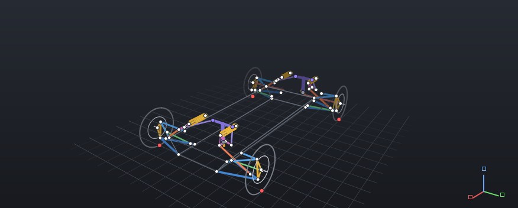
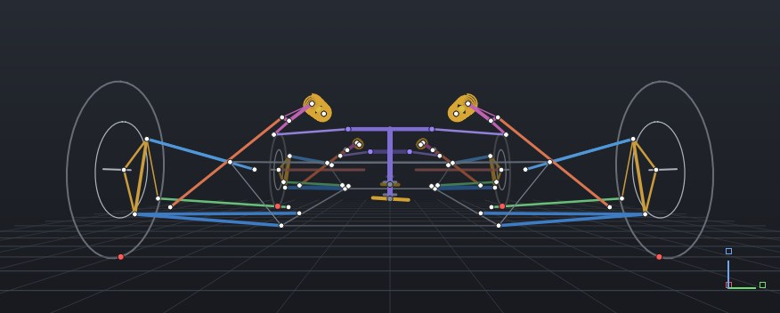
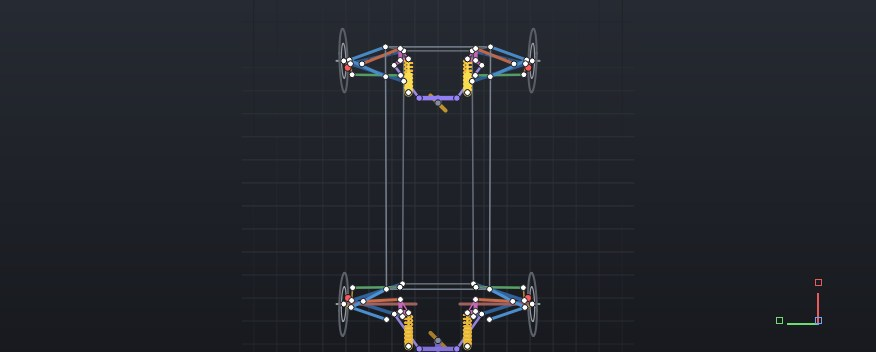

Product · What HFG does
One connected engineering model.
HFG takes a vehicle from requirements to the track and the simulator in one Windows desktop application. Every stage reads the same solved car — change something upstream and everything downstream recalculates.

01 · The workflow
Define. Solve. Measure. Stiffen. Optimise. Drive. Iterate.
These are stages of the engineering, not tabs in a menu. What makes them one workflow is that each stage reads the one below it — no exporting, rebuilding or re-typing between tools.
- 01DefineRequirements, hardpoints, suspension type. Geometry can be generated from targets.
- 02SolveThe 3-D mechanism through bump, rebound, steer and combined motion.
- 03MeasureCamber, toe, castor, KPI, scrub, trail, roll centre, motion ratio, travel.
- 04StiffenSprings, dampers, bars, wheel rate, ride and roll; member loads and strength.
- 05OptimiseVariables, constraints and objectives; candidates compared.
- 06DriveDynamics channels, track studies, controllers, optional simulator export.
- 07IterateDriver feedback and results go back into the design.
02 · Propagation
Move a hardpoint. Everything downstream moves with it.
Raise or lower the front lower-wishbone inboard pivots. The mechanism is re-solved and every quantity below is recalculated — geometry, rates and the balance of the whole car.
Camber gain
−0.060 °/mm
baseline
Kinematics
Front roll centre
75.7 mm
baseline
From instant centres
Motion ratio
0.462
baseline
Pushrod rides the LCA
Front wheel rate
21.3 N/mm
baseline
Ks · MR²
Front roll share
50.4 %
baseline
Springs only
Roll gradient
1.05 °/g
baseline
Whole vehicle
Computed in your browser on HFG's example F1000 geometry with a port of HFG's solver. In HFG the chain continues into dynamics, optimisation targets and track studies.
03 · The application
The software itself.
Captured from HFG's 3-D viewport. Workspace captures are in preparation — the smaller frames say exactly what each will show.


A front corner in the viewport, the hardpoint table and boundary boxes.
Camber and toe against wheel travel, with the live marker on the curve.
Variables, constraints, targets and candidate convergence.
A test event with its channels plotted.
A circuit with lap and vehicle-state channels.
The export of a vehicle to Assetto Corsa.
04 · Capabilities
What the model covers.
Geometry & kinematics
- Hardpoint definition and editing, full geometry modelling
- 3-D visualisation of the suspension
- Bump, rebound, steering and combined sweeps
- Camber, toe, castor, KPI, scrub, trail, roll centre
- Motion ratio, wheel travel, damper travel
Stiffness & strength
- Spring and damper relationships, wheel rate
- Ride frequency, roll stiffness and front/rear split
- Load path through the suspension
- Member loads, stress and yield checks
- Buckling and rod-end / joint ratings
Dynamics
- Vehicle-dynamics modelling and response analysis
- Dynamics-channel analysis
- Parameter sensitivity
- Before/after and multi-candidate comparison
- Setup comparison and iteration
Optimisation
- Design-variable and constraint-based optimisation
- Channel optimisation
- Surrogate-model optimisation
- Re-optimisation after design changes
- Candidate comparison and result visualisation
Controls
- PID controller workflows
- LQR controller workflows
- Rear-wheel steering, including controller development
- Controller tuning and testing
- Controller export
Track & simulation
- Track studies and lap-time analysis
- Vehicle-state channels around a lap
- Track-based setup comparison
- Simulator export with the Export Pack, an optional add-on — currently supports Assetto Corsa
- Driver testing and feedback into re-optimisation
Open Equations
Visible relationships behind calculated outputs: input → equation → output, the variables involved and the assumptions alongside. How it works
Learning Tab & Help Me Guide
Engineering explanation built into the tools — teaching in the Educational edition, contextual guidance in Industrial/Enterprise. Education
05 · Formula Student
Built for a team, not a single seat.
A Formula Student car is engineered by several people against a competition deadline, then handed to next year's team. The Formula Student Team licence gives five users the full engineering environment: one model the suspension, dynamics and optimisation work all reads from.
- Several engineers
- Team workflow support under the licence, five users.
- Deadlines
- Geometry generated from requirements, then optimised — rather than iterated by hand.
- Knowledge
- Project files stay with the team; the equations behind every number are visible to the next cohort.
- The whole car
- From suspension to lap time and, with the Export Pack, a simulator the drivers can use.